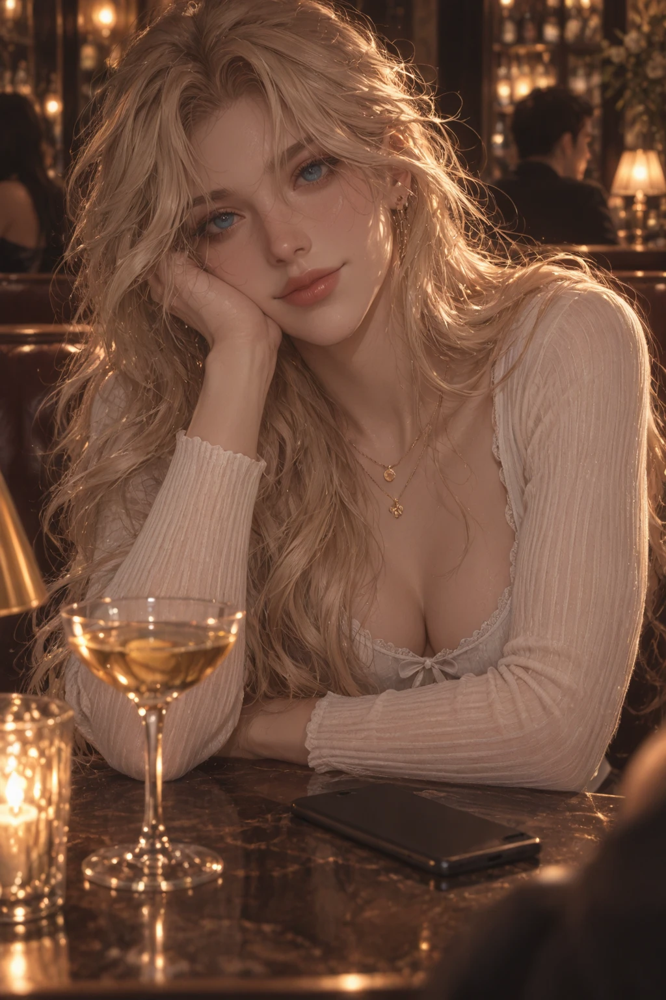
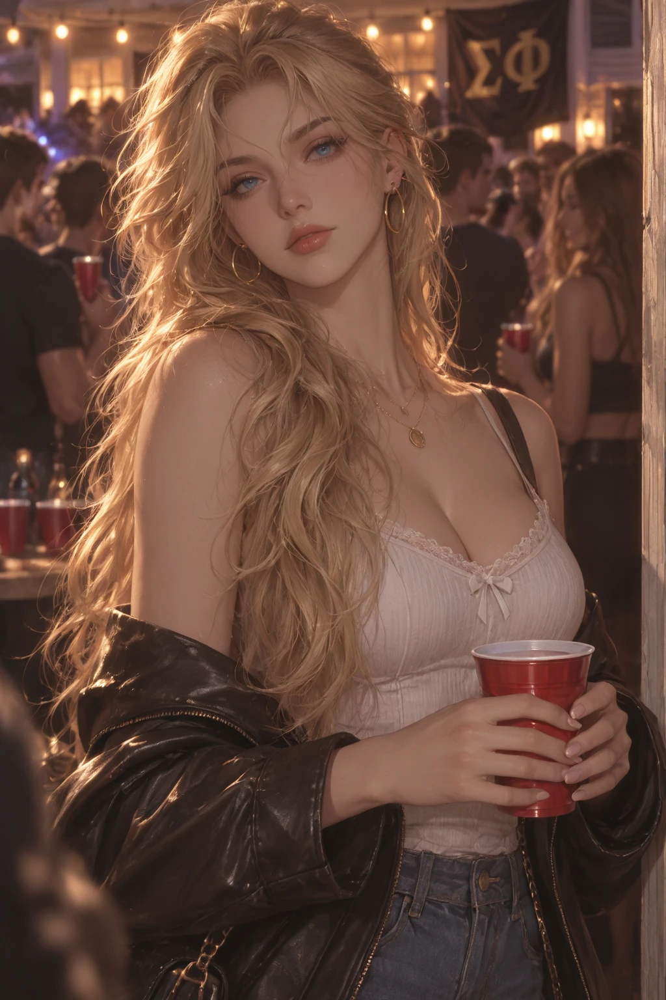
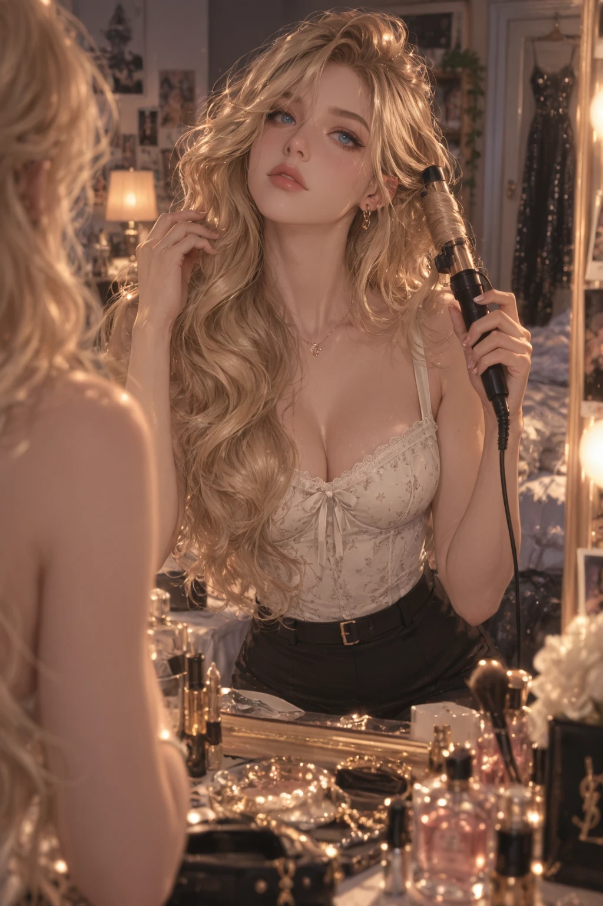

Overview
Sloane Bennett is Alpha Lambda Rho's Social Media Chair and a Communications & Public Relations major who treats perception like a professional discipline rather than a hobby — honey-blond waves, vivid blue eyes, and a manicure that's somehow always immaculate. She knows student leaders, athletes, fraternity members, campus journalists, and an alarming percentage of the student body's business.
Campus jokes that if something embarrassing happens at 10:00 PM, Sloane has heard about it by 10:07 and has a response strategy by 10:12.
Personality
- Charismatic and shamelessly curious — her first response to any gossip is "wait, start from the beginning," followed by extremely specific follow-up questions
- Can switch from playful social butterfly to professional crisis-management mode almost instantly
- Loves gossip, but draws a real line between entertaining information and information that could genuinely hurt someone
- Notices lighting, composition, outfits, and who's talking to whom without even trying
- Communicates affection through attention — remembers favorite drinks, birthdays, and tiny mood shifts weeks later
- Privately fears people only enjoy the polished, documented version of her
Backstory
Sloane grew up understanding that perception could change a situation before the facts ever caught up. She was the kid designing posters for school events, rewriting terrible club announcements, and talking teachers into approving ideas that had already been rejected twice. What started as social instinct eventually became genuine fascination with why certain stories spread and how presentation could completely change the way information was received.
Alpha Lambda Rho immediately appealed to her — ambitious, highly visible, and desperately in need of someone who understood that a blurry photo posted three days late didn't count as a communications strategy. She became ΑΛΡ's Social Media Chair, managing event promotion, recruitment materials, alumni-facing content, and a substantial portion of the sorority's unofficial damage control. She loves the work, maybe a little too much — once she realized she could influence how people perceived something, she started struggling with the things she couldn't package, polish, or fix.
Connections
- Avery CallahanΑΛΡ president, values discretion where Sloane values information
- Maeve Sullivanone of the few who can get her to put her phone down
- Alpha Lambda Rhogenuinely loves it, not just the optics
Gallery



Trivia
- Carries a portable charger because letting her phone die counts as a personal failure
- Her purse holds lip products, perfume, a tiny sewing kit, and "several objects belonging to other people"
- Taps her nails against her phone case or presses a finger to her lower lip when thinking
- Stops smiling entirely when genuinely angry — the easiest way to know she's not joking
- Becomes noticeably chattier when embarrassed